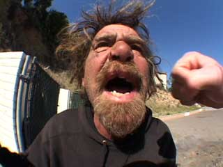"Society
has a fascination with homeless people, people living on the streets.
Almost a perverse fascination. People don't get a chance to see much of
that. We thought it would be exciting to get a glimpse of that kind of
life. Fights are part of homeless culture. It's a way for them to vent
their anger. We're simply there to video it. "
Ray Laticia and Ty Beeson were "forward-thinking" filmmakers
in their early twenties when they spent three years developing the fastest-selling
independent video in recent history: Bumfights: A Cause For Concern.
One part brutally voyeuristic shockutainment, two parts MTV's Jackass
- these $19 VHS tapes and DVDs fly in the face of Terence McKenna's
theory that our tragic universe is running dangerously short of fresh,
appealing novelty.
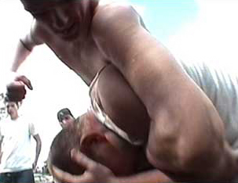The
premise of this production is brutal and straightforward. Homeless men and
women living on the streets of California and Las Vegas (affectionately
referred to as bums) are offered cash, food, liquor, clothing, and
motel rooms. In exchange, they perform amateur stuntwork without safety
nets, erstwhile fisticuffs in public places without protection - or any
kind of vicious brawl which might serve to titillate giggling armchair fratboys
watching from presumably the same USC or UCLA dormitory once occupied by
the video's producers.
One
on one, two against one, groups versus groups - even trucks against outhouses.
Scruffy, toothless vagrants scuffle and skirmish, executing obscene pratfalls
with the grace of neither Buster Keaton nor Mr. Bean. We see diseased,
urine-stained castaways who wrangle and wrestle like adult homosexuals
mutually mouth-rolling the world's last remaining latex condom. The more
adventurous exchange violent, bloody facial blows with blunted axes. And
if that isn't enough, please enjoy the lovely supermodel Angela Taylor
bouncing around on a motel bed during intermissions, flashing her boobs
in an engaging strip show! You go girl!
One prays that the remaining 99% of this backalley Broadway musical has
been equally choreographed, but that just isn't the case. On the tape,
a man pulls out one of his teeth with pliers. Another sets his hair on
fire. Another shits on the sidewalk. They're rewarded with half a pastry.
Others jump off buildings and speed down hills in shopping trolleys, and
the tape's formidable antihero - "Rufus" the Superstar Stunt
Bum - breaks his ankle during a fistfight. Age 47, honorably discharged
from the United States Army in May 1982 for injuries sustained during
combat training, Rufus is the loudest and most vocal of the bunch, the
guy who sports the big huge BUMFIGHTS tattoo across his forehead.
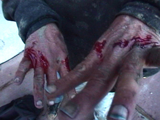Another
"bum," Donald Brennan (age 53) was honorably discharged from
the United States Army in 1970. He was a member of the 1st Air Cavalry
and served a 13-month tour in Vietnam. Mr. Brennan has been decorated
with both a Purple Heart and a Silver Star.
Hardened, angry fists clenching rolls of quarters smash faces, knock
out teeth, and bloody eye sockets - all to the charming strains of a punk
rock soundtrack. After only a few minutes, it's hard not to feel a bit...
(long sigh)... empathetic with this entire cast of
ne'er-do-wells. It sinks in right away: you're watching sad people down
on their luck getting harassed, knocked around, and outright bribed with
salted snack treats into bloody confrontations. They're supplied with
knife blades in some segments, and pipin' hot vials of crack in
others - which they smoke with quiet desperation and refreshed enthusiasm.
Drugs and malt liquor fuel infuriating sequences of interracial curb stompings
and full-scale riots in awkward, public places. The brawls - and the cameras
- continue to roll as horrified passersby call the police, try to break
things up, and scramble with paramedics.
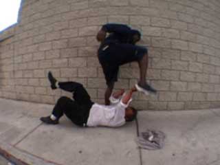What's
the worst thing you've ever done to a homeless guy? Surprised him by shouting
TIM-MAY!! directly into his fat, red face so he drops his
clankity cup and all those coins go rolling around every which way and
he just stands there tinkling down his pantlegs?
These homeless people all have something in common. They genuinely appear
to believe they're goin' places. They've been selected by honest-to-gosh
Hollywood producers. Hollywood, California that is! Let's
fool these... these... dumb bum doofuses into thinking they're
gonna be the next best thing since The Tonight Show with Jay Leno.
No, seriously dude. Take this here tuna salad sandwich and put your imagination
on. Y'all are gonna explode like wildfire across the big silver
screen TV. Audiences root for "underdogs" who can still thrive
under adversity. Viewers appreciate reality, and they've come to
enjoy a measured sense of progressive, sequential elimination. Fame, financial
incentive, and a sure way to pull yourself out of poverty is staring you
straight in the face, gentlemen - and you have absolutely nothing
to lose! I dare say what you're lookin' at here is a bonafide whirlwind
rags-to-riches fairy tale miracle fantasy-dream with angel wings comin'
true to life! Okay? Great. Cause tonight we're filming a segment called
Bum Hunter.
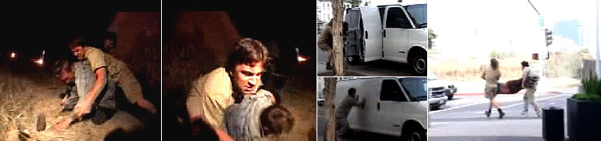
We're going to creep up on people shivering in sleeping bags, and pin
'em down real good. Crikey! This one's getting away! Lucky we've got eight
rolls of duct tape! Shrrrrrrrick! They're hard to tackle,
and you don't often see them in the wild. Shrrrrrick! This
one's got a tremendous amount of extra strength! He could be on
PCP! We'll stuff him in a van, take his shoes, and release him three days
later fifteen blocks away.
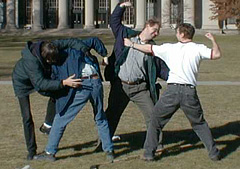Don't
ya see, dude? Bumfights is like Friends meets Queer Eye
For the Straight Guy meets Survivor - starring individuals
deprived of food and shelter who are willing to take drugs and
suck dicks. They'll be pitted against one another in the
controlled, manageable environment of everyday social discord. This kinda
shit taps directly into our unconscious desire to finally initiate
that long overdue backlash against the homeless population. So whaddya
say? Aren't we all just a little bit tired of looking at their
knobby, grubby hands and styrofoam cups? Their poorly inked cardboard
signs? We hate being assaulted by gobbly turkey voices on the street,
and we just can't stand it when they approach our automobiles
and we're idled at a red light. We can thin out their ranks. We
can get them out of here. And if homeless people smashing each
other's faces with broken bottles isn't extreme enough in this dwarf-tossing
Fight Club era, we'll throw some high-school students into the
mix, and pay them with Hot Pockets.
Bumfights
weighs in at 57 minutes. It's populated with ghastly, there-but-for-the-grace-of-God-go-you
types, plucked fresh off the street like bruised raspberries. The ethical
debates which ping-pong back and forth inside the viewer's mind are a
weighty side-effect of the video's popularity. Those seeking to proclaim
such tapes illegal raise the distressing prospect of banning everything
which fails to measure up to a neighborhood's standards of political correctness.
Independent video stores are more than happy to showcase featurettes
like World's Scariest Police Chases, or Girls Gone Wild. Gang
rapes, street fights, barroom brawls and hockey matches are happening
all around us. They're captured on film each and every day of the week.
During the Great Depression, bums earned money by performing in geek shows,
swallowing live snakes or biting the heads off chickens. Mentally ill
men and women are turned loose from halfway houses at an alarming rate,
and many states have ceased financial aid to ex-cons seeking to rebuild
their lives.
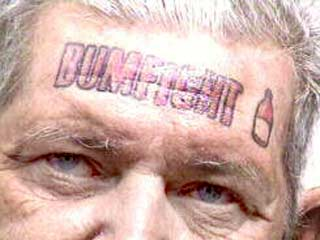
and so
The bums awoke from their stupors, punch-drunk and pissed. They'd been
conned into terrible stunts by a handful of overenthusiastic filmmakers
and cheap door prizes. In one instance, a single plain cake donut
was the winning trophy. Lawsuits were filed in no short order: bums on
one side, video producers on the other. Alas, we good people were served
only "knuckled" sandwiches, your Honor - and while none among
us was hot enough to advance, what we got for our efforts weren't even
slightly better rags.
The defendants (Ryan McPherson, 19; Zachary Bubeck, 25; Daniel J. Tanner,
21; and Michael Slyman, 21) pleaded not guilty to charges of battery,
illegal fight promotion, conspiracy and soliciting 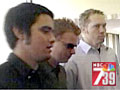an
assault with deadly force. They claimed to possess a mutually beneficial,
professional working relationship with the homeless, arguing that each
and every last bum chose to fight. They were willing contractors
who signed fanciful disclaimers protecting the filmmakers from important
liabilities. The participants were indeed rewarded for their efforts,
and they collected their winnings. The defense went on to state they were
merely interested in documenting the inherent "humor of homelessness,"
something which hadn't really been touched upon in mainstream entertainment.
When the footage was screened, the judge's jaw dropped and a witness covered
his eyes.
Interviews with the filmmakers laid bare contradicting intentionality.
To the BBC, Laticia explains Bumfights "is not done to be
shocking. It was done to show an aspect of society that people would otherwise
not see." To Wired magazine, he claimed the video was
designed to shock: "We're quite aware that some people find it hilarious
and some people find it disgusting." The closest they ever got to
the truth was during an interview with the Las Vegas Review-Journal:
"This project is a means to an end. We want to be feature filmmakers.
We're going to cash in and then cash out and go make some movies."
And then, when grilled by Greta Van Susteren on FOX News in 2002, Ty
Beeson asserted that pulling out Rufus's tooth with pliers was actually
kind of a favor.
VAN
SUSTEREN: Why didn't you send him to a dentist instead of handing
him a pliers?
BEESON: Because he needed it out at that point in time, and sometimes
in the streets, it gets rough, and you've got do whatever it takes. That's
real life.
VAN SUSTEREN: Lots of people get real-life toothaches, Ty, and
they go to the dentist.
BEESON: You're right. A lot of them do, but -- but when you're
in the streets and you can't, you've got a -- and you've got a tooth that's
bothering you, then you do whatever it takes.
VAN SUSTEREN:
How can you call it real when it's staged, when you're paying people to
pull their teeth out with pliers and you're paying them to do stunts that
are dangerous, to bang their heads against walls? How is that...
BEESON:
Well, how could you say it's staged when that was his real tooth and he
really pulled it out with the pliers?
VAN SUSTEREN:
Did you pay him to do it?
BEESON: Did we pay him to pull out his teeth?
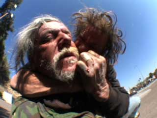
VAN SUSTEREN: Yeah.
BEESON: No.
VAN SUSTEREN: Why did he do it then?
BEESON: It bothered him.
VAN SUSTEREN: So what -- you just sat and filmed it. It was just fortuitous
that you were there and could film the man pulling his tooth out with
a pliers?
BEESON: Yeah.
VAN SUSTEREN: It was?
BEESON: Did you say gratuitous?
VAN SUSTEREN: Fortuitous that you just happened to be there.
BEESON: No, we caught it on tape. That's -- we caught it on tape,
and that's what happened. I
mean -- well, it bothered him. He pulled it out. I don't know why we're
still talking about
this..
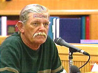Prosecutors
countered that it was wholly inaccurate to describe people without food,
shelter or clothing as individuals with choices. Craig Walton, professor
of ethics and policy studies at the University of Las Vegas remarked that
even the gladiators in the Roman Empire had better conditions.
"I didn't know if this was legal or illegal," one participant
said. "But I'd seen Jerry Springer and reality TV shows. I thought,
why not be part of what's going on in the world? But my sense right after,
I felt like this was something really demoralizing."
Out marched congressman Rep. Earl Blumenauer [D-Ore.] to express his
own personal outrage: "I have been appalled at the people who
would not just avoid helping but actually are seeking to exploit the homeless."
Blumenauer went one step further, making inquiries with the heads
of federal agencies in Las Vegas, including the F.B.I, United States Customs
authorities, and the Postal Service.
In January of 2003, a judge decided there was insufficient data to support
the most serious criminal charges against the producers of Bumfights.
He ruled there was no evidence which demonstrated any of the filmmakers
asked homeless people to assault each other. He scorned the production,
declaring there was something "abhorrent and morally repugnant in
finding joy and profit" through demeaning other human beings, especially
homeless alcoholics.
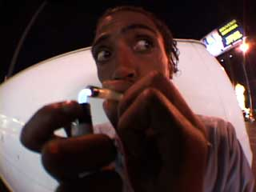In
May of the same year, producer Michael Slyman pled guilty to a misdemeanor
charge of conspiracy to stage an illegal fight. He was placed on three
year's probation and ordered to (ahem) perform volunteer work with
the homeless.
Laticia is a graduate of the University of Southern California film school.
Beeson graduated from the film school of University of California, Los
Angeles. The two have decided to donate a percentage of the proceeds from
the film to a homeless charity, but they "haven't yet decided which
one".
Bumfights volumes two and three are all but complete. Rumour has it that they won't come out until the remaining "stars" settle (or lose) their civil lawsuits. One of the suits claims that the bum-- err victim was attacked by the "cast" despite refusing to sign a release and declining to participate in the film. Whoops!
UPDATE September 2003: Bumfights volume 2 has been released.
Get your copy of Bumfights and other mayhem at the Rotten Store.
|